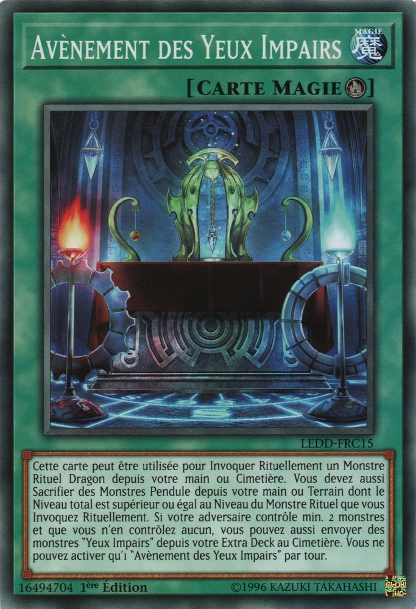
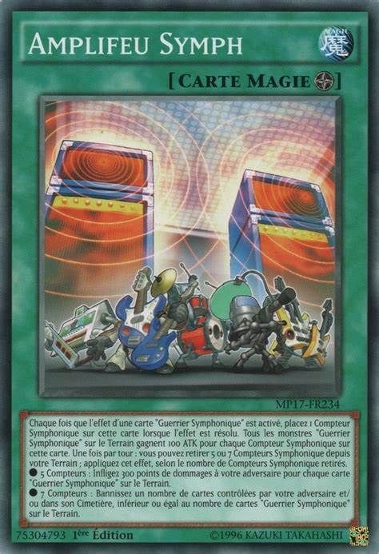
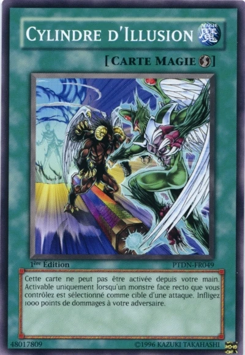
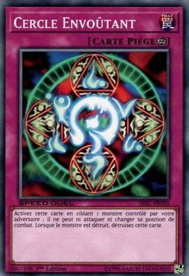
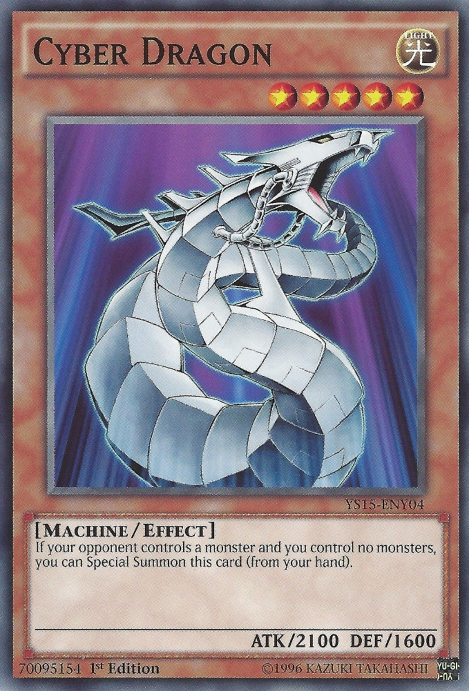

Les cartes "magies"
Il existe 6 types de cartes magie : les cartes magie normales, continues, d'équipement, de terrain, rituel et jeu rapide. Ces cartes se trouvent dans le main deck.
Les magies normales

Les cartes magie normales sont des cartes magie que vous pouvez jouer durant votre tour. Après leur utilisation, elles vont au cimetière.
Les magies continues

Ce sont des cartes que vous pouvez jouer durant votre tour. Elles
restent sur le terrain.
On les reconnait grace au symbole :

Les magies d'équippement

Ce sont les cartes qui s'equipent à des personnages pour leur
conférer des bonus.
On les reconnait grace au symbole :

Les magies rituel

Elles servent à invoquer des personnages de type rituel.
On les reconnait grace au symbole :

Les magies de terrain

Ce sont des cartes qui possèdent leur propre zone:"la zone
terrain". Chaque joueur ne peut en controller qu'une, mais chaque
joueur peut sacrifier son terrain pour en jouer un nouveau.
On les reconnait grace au symbole :

Les magies jeu rapide

Il sagit de cartes magie qui peuvent soit être jouées durant votre
tour soit étre posées pour être jouées durant le tour de votre
adversaire.
On les reconnait grace au symbole :

Les cartes "pieges"
Il existe 3 types de cartes piège : les cartes piège normal, continue et contre piege. Ces cartes se trouvent dans le maindeck.
Les pièges normaux

Les carte piège doivent être posées durant votre tour pour pouvoir être activées durant le tour de votre adversaire.
Les pièges continus

Les cartes piège doivent étre posées durant votre tour pour
pouvoir être activées durant le tour de votre adversaire, mais,
comme les magies continues, elles restent sur le terrain.
On les reconnait grace au symbole :

Les contre-pièges

Les cartes piège doivent étre posées durant votre tour pour
pouvoir être activées durant le tour de votre adversaire. Elles
servent généralement a annuler une action de votre adversaire.
On les reconnait grace au symbole :

Les cartes "monstres"
Les cartes monstre sont les différents personnages.
Il existe 7 types de cartes monstre : les cartes monstre normal, à
effect et rituel, pour le maindeck, fusion, synchro, xyz, et lien,
pour l'extra deck.
Les monstres normaux

Ce sont les monstres sans effet. Les cartes sont de couleur beiges.
Les monstres à effet
Ce sont les monstres qui ont des effets. Les cartes sont de couleur brune.
Les monstres rituel

Ce sont les monstres qui s'invoquent grace aux magies rituel. Les cartes sont de couleur bleue.
vidéo sur les monstre rituel
crédit: Joeri Sama
Les monstres fusion

Ce sont des monstres de l'extra deck pouvant être invoqués en fusionnant d'autres monstres. Les cartes sont de couleur mauve.
vidéo sur les monstre fusion
crédit: Joeri Sama
Les monstres synchro

Ce sont des monstres de l'extra deck qui s'invoquent en additionnant le niveau d'étoile des monstres. Les cartes sont de couleur blanche.
vidéo sur les monstre synchro
crédit: Joeri Sama
Les monstres XYZ

Ce sont des monstres de l'extra deck qui s'invoquent en utilisant plusieurs monstres qui ont le même nombre d'étoiles. Les cartes sont de couleur noire.
vidéo sur les monstre xyz
crédit: Joeri Sama
Les monstres lien

Ce sont des monstres de l'extra deck qui s'invoquent en utilisant un nombre de monstres précis.
vidéo sur les monstre lien
crédit: Joeri Sama